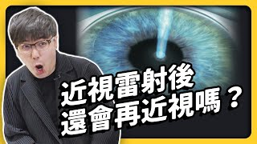
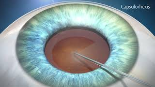

<section role="region" aria-label="眼科治療與人工水晶體">
    <h2>眼科治療</h2>
    <div class="img-grid-3">
        <figure>
            
            <figcaption>近視雷射</figcaption>
        </figure>
        <figure>
            
            <figcaption>白內障手術</figcaption>
        </figure>
        <figure>
            
            <figcaption>人工水晶體（IOL）</figcaption>
        </figure>
    </div>
    <div class="img-grid-2" style="margin-top:.4em">
        <figure>
            
            <figcaption>單焦 vs. 多焦</figcaption>
        </figure>
        <figure>
            
            <figcaption>單焦 vs. 延焦</figcaption>
        </figure>
    </div>
</section>
